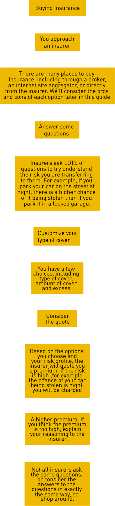
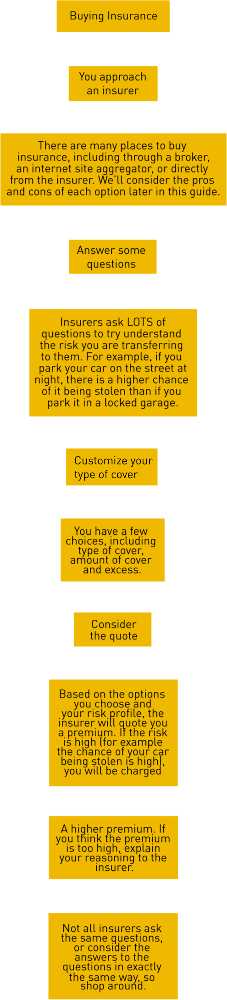
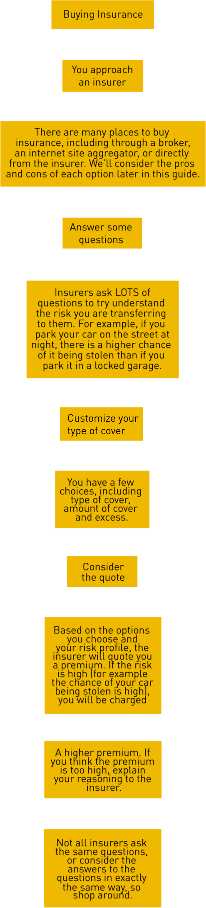
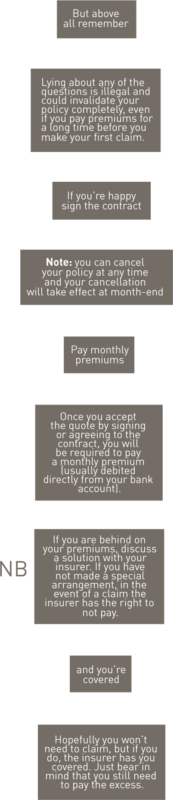
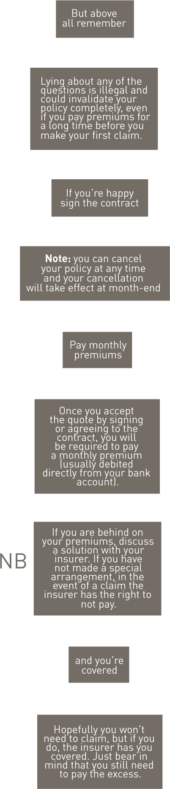

Knowledge is the key to all doors. Educate yourself and cultivate the garden that is knowledge.
Make sure you know what you are covered for, what is excluded and what to do to obtain the cover you require. Avoid surprises. Don’t bank on writing to the ombudsman when your claim gets rejected, you may lose. Prevention is better than cure.
You’ve probably heard the word “insurance”
advertised on the TV, radio, newspapers and
even in some magazines. Companies try and
sell it to you when you buy a cell phone, a piece
of furniture or maybe when you take out a loan
or new bond to buy a house.
But what is insurance, why do you need it,
and how do you know if what you are buying
is suitable for you?
Insurance is the transfer of risk from one party
to another. But what do we mean by risk?
Specifically, in the short-term insurance
industry, when we talk about risk we mean the
potential to make a financial loss from an
unexpected event (such as a burglary or
accident).
The financial loss can be for
anything; indeed, there is insurance available
for almost any loss you may suffer that you can
imagine.
Short-term or non-life insurance,
protects you and your assets from the financial
risk of something going wrong. It can’t stop
something happening, but if something
unexpected does happen that is covered by
your policy, it means you won’t have to pay the
full cost of a loss.
An example of a financial loss is the price to
replace a TV that has been stolen from your
house while you were at work. Or perhaps it is
the price for a panel beater to fix your bumper
after you accidentally bumped into a car while
trying to parallel park.
Once you have bought an insurance product, you are then referred to as a POLICYHOLDER (as you now hold an insurance policy), and are COVERED by the insurance company for any event/s that results in a loss and are specifically mentioned in the insurance policy document
As you can see, the purpose of short-term
insurance is to put you in the SAME FINANCIAL
POSITION you were in BEFORE the loss
happened.
This is what we mean by the transfer
of risk. Instead of you having to lose money
because something unfortunate happened,
insurance allows you to transfer this risk to the
insurance company, who will instead pay out this
loss on your behalf (or perhaps reimburse you
for the amount you have already paid).
This transfer of risk is not free, and is bought
with what are called PREMIUMS. This is
essentially the price of the insurance, and can
be paid with regular instalments (e.g. monthly)
or in a single amount.
Insurance protects you and your assets from the financial risk of something going wrong. It can’t stop something happening, but if something unexpected does happen that is covered by your policy it means you won’t have to pay the full cost of a loss.
That means that if something goes wrong, you’re much less likely to use your savings or your investments, borrow money, ask family or friends for financial help, or sell your assets to get additional money.
You won’t have to rely on help from government and community groups that usually only help in disaster situations such as floods or fire where the help might not cover all of your loss and so may not help you to rebuild your life.
You may not have the cash in your bank account to buy a new R5 000 TV if your current one is stolen or to pay a panel beater R20 000 to fix your car after an accident. Insurance protects you against losses happening at times when you may not have enough money AT THAT POINT IN TIME to cover a big bill.
Essentially what insurance does is it moves the risk of an UNCERTAIN FUTURE LARGE LOSS to the insurance company in return for small payment in the form of a premium. Therefore, the question is: “Would I rather MAYBE pay out R500 000 sometime in the future if my house burnt down, or DEFINITELY pay a monthly premium and not have to pay out a large amount if an accident happens?”
Some people may save enough money in their bank accounts to be able to afford unfortunate future events, and would have to consider what kind of insurance, if any, is suitable for them.
These numbers are examples and are just being used to show how insurance can reduce a large, potential future loss, into a small, certain premium. The question on whether to buy insurance depends on what we, in the insurance industry, call a person’s RISK AVERSION.
This means that people who dislike uncertainty and riskiness would be more keen to buy insurance (as they reduce the risk of having to pay out unexpected large losses) and people who prefer to gamble and take chances would be less keen to buy insurance (as they would take a chance that if they don’t buy insurance, nothing unfortunate will happen to them in the future. They also would not mind being without a TV or drive around in a dented car).
The first thing to think about when deciding if an
insurance product is suitable for you is if you can
afford it. If the premiums are too high compared
to your monthly income, it may not make sense
for you to buy it. However, if the premiums are
affordable, the main question to ask is if the
premiums you are paying would still be less than
the eventual loss you may suffer.
Let’s say you have an accident in 3 years and it
costs R150 000 to fix your home and if premiums
cost R64 a month, then over the 3 years you
would have paid about R2304 in premiums (R64 x
12 months x 3 years). So you would have received
R150 000 in benefits for loss of R2304, and
therefore you have benefitted from insurance
cover.
However, to do the above calculation when you are deciding to take out an insurance policy is very difficult as there are many factors to consider (premium inflation, the exact financial losses you are covered for, excesses – we will discuss this later, etc.). Also, because the events you are covering with insurance are by nature unknown, and may not even occur (e.g. you may never have an accident to your home), predicting what this may be is very difficult. So, a better way to decide whether insurance is suitable for you may be to simply decide if, after deciding if the premiums are affordable, does insurance give you peace of mind? In other words, once you have bought your insurance, does the fact that you no longer have to worry about how you will pay for unexpected bills make you feel more comfortable and help to relieve your stress? If the answer to this is yes, then insurance may be suitable for you.
So you’ve decided that you need insurance and are now ready to buy some cover. This section will explain all the steps to buying insurance, paying premiums, making claims, and generally how to get the most out of the insurance you have bought.

 

Selecting an insurance company can be a tricky process and can be based on any number of reasons, including whether you like one insurance company more than another. The best insurer may not necessarily be the one with the cheapest premiums, but may be the one with the best reputation. After chatting to colleagues, friends and family, you may get a better idea of which insurers treat their customers the best. However it may be good to keep in mind that some people may feel that they have been mistreated by insurers, when they were in fact the ones to blame! So it’s important to get the whole story when someone has had a bad experience with an insurance company.
Choosing an insurance company goes hand-in-hand with choosing the right insurance product. Some insurers may offer products and added benefits that other insurers don’t, and the value of these products should be considered as well as the reputation of the insurer. There are websites available that can compare the premiums charged for a certain insurance product (e.g. motor insurance) between different insurance companies – these are called price aggregators. These can help you choose the most affordable premiums, but it must be warned that some websites only show certain insurance companies and their products.
It is important to find out who the website represents. In fact, some websites are owned by the same company that owns the insurance company and therefore only show the insurance products belonging to the insurance companies it owns. Remember also, that they may not show you all the policy conditions, such as exclusions or additional benefits, which will make comparing apples with apples difficult.
As we hinted above, insurance is not all about price. Each insurance product will have different features, benefits, costs and limitations. If you have a broker or agent, they must give you a summary of these for each product they are recommending and can advise which is the most suitable for you. If you going to choose a product by yourself, calling the insurer and asking about the product you are interested in is one way to find these out, or you can ask to see a copy of the policy to read the terms and conditions. You can also check their website for further details.
Once you’ve chosen an insurer and a product, it’s time to fill out an application or proposal form. This form lists all the details of what you want to be covered in the insurance contract, details about you as the policyholder and how the insurer can contact you. This can be seen as one of the most important parts of buying insurance, and needs to be filled out as accurately and as honestly as possible.
No this has nothing do with Uber. This funny Latin phrase is what all insurance is based on.
Without it, it would be impossible for the insurance industry to function. It means “in utmost good faith”,
and is the way in which the insurer and you should interact. It says that everyone in an insurance contract
needs to act in complete honesty at all times in order for insurance to be possible.
You expect your insurer to act as transparently and truthfully with you as possible, right?
Then the same is be expected from you.
You’ve bought insurance, have paid your
premiums, you understand your policy document
and have kept your insurer up-to- date regarding
any changes that may affect your policy. Then
the unthinkable happens: an accident, theft or
other loss happens, and you need to claim from
your insurer. Don’t panic; if you follow the steps
below you should be in the same position you
were in before the unfortunate incident in no
time at all.
Have a look at your policy document, this will let
you know if you are able to claim, and what you
may need in the event of claiming. For example,
if you have bought travel insurance and your
flight has been delayed, you may need to get a
signed statement from the airline giving the
reason for the delay. By reading your policy
document you will know that you need this, and
will be able to get the statement from the airline
before you leave the airport. Without this, the
insurer may not pay out the claim (again, check
your policy document wording to confirm this).
Call, email or submit your claim online if the
insurer caters for this. Tell them you have to
submit a claim and what they require from you.
Usually legal documentation, police records,
witness statements, images etc. will be needed
for some claims. This is not to make the process
difficult and burdensome for you. It is to make
sure that your claim is genuine. There is a huge
amount of fraud in the insurance industry and
the insurer needs to be sure it is paying out a
legitimate claim. And that’s it! Get a
reference or claim number from the insurer so
that you can track the claim. In the event of a
claim, an assessor may be appointed to assess
the loss or damage and confirm that the claim
is valid.
The claim can be paid in cash, or the damaged
or lost items can be repaired or replaced. An
assessor will typically take into account the
whole sum insured to determine the amount to
be paid for the specific damaged or lost item. In
the case of under insurance the insurance
company will only pay part of the claim.
Example: Let’s say you insured your household items for a total of R100 000 and your television gets stolen. Let’s say the value of the television is R3 000. The assessor will determine whether the household items at the time of the loss are indeed only worth R100 000. If he finds that the value of the household items is actually R150 000, then you are under insured.
Premiums were only paid based on an amount of R100 000 (2/3rds worth of the actual value of items). Therefore, only 2/3rds of the television’s value would be paid out, i.e. R2 000.To prevent under-insurance, it is important that you regularly update the amount your household contents is insured for.
Cash back bonuses, no claim discounts and other promotions offered by insurance companies are very real. However to take full advantage of such deals, it is important to fully understand them and their limitations. Do not be afraid to ask a sales consultant or your broker to explain these features, in detail, to you. It is important to remember however, that every special deal has a cost. An insurance company will usually charge for such special deals or bonuses. The charge may not be immediately apparent, but it is up to you or your broker to decide whether the premiums you are paying and benefits you are receiving are worth the bonuses you are being offered. In short, you should not take out an insurance policy based solely on the bonuses that the insurer is offering. The most important thing to consider is whether the insurance policy as a whole, works for you.
Ask your insurer. This is a question they would be more than happy to answer. Sometimes doing something a little different, like only allowing yourself to drive your vehicle, can reduce your premium. Also adding a tracker to your car can reduce your motor insurance premiums. Other things you can do, is ensure you have burglar bars on all windows, security gates on all doors and a burglar alarm with armed response. Anything that the insurer would perceive as reducing your risk of claiming should reduce the premium you are being charged.
Your insurer wants to know enough about you so that they can accept your own risks. The more information they have about you, the better they understand your risk and the more accurately they can charge you premiums that reflect your risk to them.
A fraudulent claim is a claim that is made to an insurer about an event that didn’t happen. It is also fraudulent to give the wrong details about a claim that happened to your insurer. This can be summarised as follows:
i) Claiming for something that was not lost
(e.g. an item was claimed to be in the boot of your stolencar when it wasn’t)
ii) Overstating what was lost
(e.g. inflating the true worth of an item that is being claimed for, for example claiming for a R9 000 t.v.
when your t.v. was only worth R3 000.00)
iii) Adjusting the circumstance of what was lost
(e.g. claiming that someone hit your car when you in fact bumped into them)
Insurance fraud has a devastating effect on the industry and works to increase the premiums that are paid by EVERY policyholder. So whether you think it effects only the insurer, be aware that it will affect the premiums you are charged for the next policy you take and the premiums of your friends and family
Many policies include an excess. This is the
amount you have to pay if you decide to make a
claimon your policy. It’s a way of you accepting a
small portion of the risk yourself. The amount of
the excess is specified in your policy.
Insurance would be more expensive if the
companies had to pay for EVERY loss a person
experiences. So, insurance companies offer
policies with varying levels of excess. An excess
is the amount that you have to pay before your
insurance kicks in. For example, if you have a
homeowner’s policy with a R5 000.00 excess and
your bike is stolen, chances are that you won’t
ask the insurance company to pay you for your
loss or “make a claim” because the bike cost
less than R5 000.00.
That saves the insurance company time and money
and keeps premiums that everyone pays lower.
However, if you have the same excess on your
motor insurance and your car is stolen, you will
only pay up to R5 000.00 excess and they’ll repair,
replace or reimburse you for your loss, depending
on the terms of your insurance. Because excesses
lower costs and administrative burden for
insurance companies, policies with higher
excesses are usually less expensive.
Not every type of policy has the same kind and
level of excess and excesses don’t all apply in the
same situations. Your insurer may have different
types of excesses and some policies may have
more than one
If you feel that you haven’t been treated fairly, then first explain your case to your insurer. If they aren’t willing to change their decision, then you can take your case to the Ombudsman who will assess your case and do their best to make a fair decision. Remember: the Ombudsman does not work for any insurer! He or she will assess your case on its merits and make a fair decision. Not happy with the way your insurer handled your claim?
Tell your concerns to the Ombudsman for Short-term insurance at
011 726 8900 or info@osti.co.za
or www.osti.co.za or P O Box 32334 Braamfontein 2017.
If you are not happy with the advice you received you can talk to
the FAIS Ombud at 012 762 5000 / 012 470 9080
or info@faisombud.co.za or www.faisombud.co.za
The Ombud’s services are free and accessible to all consumers.
Still not fully happy? You can reach the Financial Services Board
at 0800 20 20 87 or info@fsb.co.za or www.fsb.co.za
Tell your concerns to the Ombudsman for Short-term insurance at
011 726 8900 or info@osti.co.za
or www.osti.co.za or P O Box 32334 Braamfontein 2017.
If you are not happy with the advice you received you can talk to
the FAIS Ombud at 012 762 5000 / 012 470 9080
or info@faisombud.co.za or www.faisombud.co.za
The Ombud’s services are free and accessible to all consumers.
Still not fully happy? You can reach the Financial Services Board
at 0800 20 20 87 or info@fsb.co.za or www.fsb.co.za